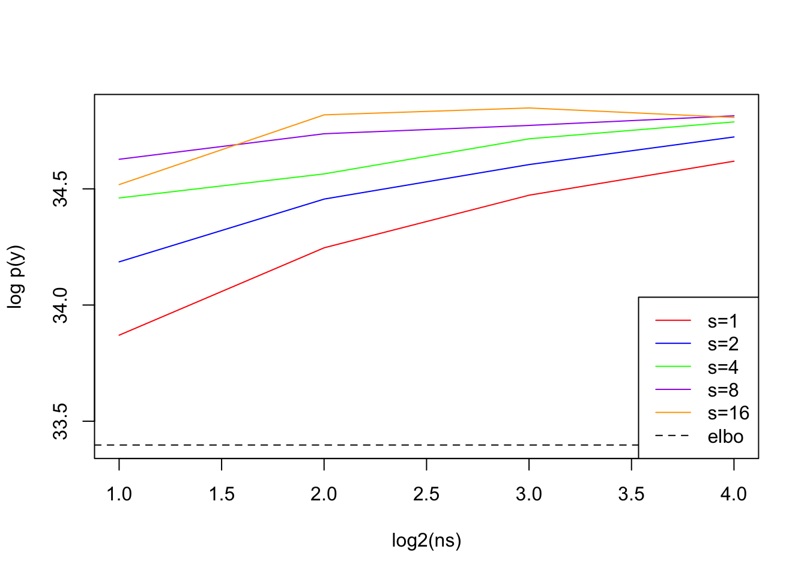

This was supposed to be a minimal working example, but when Matthew ran it he got different results than me. When I ran it again this morning I got results that agreed with his. So now this document is meant to diagnose what went wrong!
The MLE for the univariate doesn’t exist when the observations. When \(X\) is binary (e.g. in GSEA) if all of the genes in the gene set are in the gene list we can always improve the likelihood by increasing the effect size. Similarly if none of the genes in the gene set are in the gene list, we can always improve the likelihood by decreasing the effect size. When we fit the GLM in these cases using fastglm it will return a large effect size (e.g. \(\hat \beta = 14\)) and very large standard error \(\hat s \approx 20,000\). Consequently we get a \(z\)-score close to zero, but the reported likelihood ratio (LR) can be very large, and may depends on the stopping criteria from the GLM fitting procedure. Also note that when \(y_i = 0 \;\forall i \text{ s.t. } x_i=0\) the data are completely separable and the LR becomes unbounded. However, more often in our setting we will have that there is a limiting value for the LR given by the likelihood of the data in the intercept only model excluding the data where \(x_i=1\) and including the observations where \(x_i = 1\) (I thinks this is correct, but I need to check).
Failing example
Code
library(tictoc)# devtools::install_github('karltayeb/logisticsusie')# devtools::install_github('karltayeb/gseasusie')##### Minimal working examplef <-paste0('', Sys.glob('cache/resources/C1*')) # clear cash so it can knitif(file.exists(f)){file.remove(f)}
[1] TRUE
Code
make_c1_sim <-function(){##### Minimal working example c1 <- gseasusie::load_msigdb_geneset_x('C1')# sample random 5k background genesset.seed(0) background <-sample(rownames(c1$X), 5000)# sample GSs to enrich, picked b0 so list is ~ 500 genes enriched_gs <-sample(colnames(c1$X), 3) b0 <--2.2 b <-3*abs(rnorm(length(enriched_gs))) logit <- b0 + (c1$X[background, enriched_gs] %*% b)[,1] y1 <-rbinom(length(logit), 1, 1/(1+exp(-logit))) list1 <- background[y1==1] X <- c1$X[background,] X <- X[, Matrix::colSums(X) >1] idx <-which(colnames(X) %in% enriched_gs)list(X = X, y = y1, idx = idx, b = b, b0 = b0, logits=logit)}sim <-make_c1_sim()
We append \((1, 0, 1, 0)\) to the end of \(y\) and \((a, a, 0, 0)\) to each column of \(X\). We show the augmentation strategy for \(a = 1, 10\). Perhaps a better alternative is to add a very small \(l_2\) penalty to the effect size \(\beta\). It turns out in this simulation 2 of the causal gene sets are completely enriched.
When the estimated prior variance is \(0\) the Laplace approximation of the BF reduced to the LR, so the variables are just ranked by their LR.
We estimate a very large prior variance of the third effect, but the CS is very diffuse. The 3rd effect includes all of the other completely enriched gene sets.
Code
knitr::knit_exit()
Code
fit <- logisticsusie::fit_glm_ser(X, y, estimate_prior_variance = T)
#' wrapper for VEB.boost to fit logistic susie#' and tidy up output to be consistent with other susie-type outputsfit_logistic_susie_veb_boost =function(X, y, L=10, ...){ veb.fit = VEB.Boost::veb_boost_stumps( X, y, family ='binomial',include_stumps=FALSE,max_log_prior_var=35,scale_X ='NA',growMode ='NA',changeToConstant=F,k=L, ... ) alpha <-t(do.call(cbind, lapply(veb.fit$leaves, function(x) x$learner$currentFit$alpha))) mu <-t(do.call(cbind, lapply(veb.fit$leaves, function(x) x$learner$currentFit$mu))) mu2 <-t(do.call(cbind, lapply(veb.fit$leaves, function(x) x$learner$currentFit$sigma2_post))) mu2 <- mu2 + mu^2 prior_variance <- purrr::map_dbl(veb.fit$leaves, function(x) x$learner$currentFit$V) elbo <- veb.fit$ELBO_progress[[2]] res <-list(alpha=alpha, mu=mu, mu2=mu2, elbo=elbo, veb.fit=veb.fit, prior_variance=prior_variance)class(res) <-'susie'colnames(res$alpha) <-colnames(X)colnames(res$mu) <-colnames(X) res$pip <- susieR::susie_get_pip(res)names(res$pip) <-colnames(X) res$sets <- susieR::susie_get_cs(res, X=X)return(res)}tic()vebfit <-fit_logistic_susie_veb_boost(X, y1, L=10)toc()
Code
# JJ approximation-- VEB boosttic()veb_ser <-fit_logistic_susie_veb_boost(X, y1, L=1)logisticsusie::compute_cs(veb_ser$alpha[1,])toc()# JJ approximation other implementationtic()jj_ser <- logisticsusie::binser(X, y1, estimate_prior_variance = F, prior_variance=veb_ser$prior_variance)logisticsusie::compute_cs(jj_ser$alpha)toc()# veb and my implementation agree par(mfrow =c(1, 2))plot(veb_ser$mu, jj_ser$mu); abline(0, 1, col='red')plot(log(veb_ser$alpha), log(jj_ser$alpha)); abline(0, 1, col='red')# SER fit with Laplaceserfit <- logisticsusie::generalized_ibss(X, y1, L=1, estimate_prior_variance = F, maxit=1)plot(veb_ser$mu, serfit$mu); abline(0, 1, col='red')# JJ approximation other implementationtic()jj_ser2 <- logisticsusie::binser(X, y1, estimate_prior_variance = F, prior_variance=serfit$prior_variance)logisticsusie::compute_cs(jj_ser2$alpha)toc()# There is a difference between the GIBSS implementation and VBpar(mfrow =c(1, 2))plot(serfit$mu, jj_ser2$mu); abline(0, 1, col='red')plot(log(serfit$alpha), log(jj_ser2$alpha)); abline(0, 1, col='red')# the ones that don't agree are completely separated-- the MLE does not exist.# these may also inflate the estimated prior variance the VB approach?# are are we underestimating the prior variance in the Laplace approximation?weird <- (abs(serfit$mu[1,]) <0.001) * (abs(jj_ser2$mu) >0.001)max((Matrix::t(X[,weird]) %*% y1)[,1])# repeat with augmented dataXaug <-rbind(X, matrix(rep(c(1, 1, 0, 0), ncol(X)), nrow=4))y1aug <-c(y1, c(1, 0, 1, 0))# JJ approximation-- VEB boosttic()veb_ser_aug <-fit_logistic_susie_veb_boost(Xaug, y1aug, L=1)logisticsusie::compute_cs(veb_ser_aug$alpha[1,])toc()# JJ approximation other implementationtic()jj_ser_aug <- logisticsusie::binser(Xaug, y1aug, estimate_prior_variance = F, prior_variance=veb_ser$prior_variance)logisticsusie::compute_cs(jj_ser_aug$alpha)toc()# veb and my implementation agree par(mfrow =c(1, 2))plot(veb_ser_aug$mu, jj_ser_aug$mu); abline(0, 1, col='red')plot(log(veb_ser_aug$alpha), log(jj_ser_aug$alpha)); abline(0, 1, col='red')# SER fit with Laplaceserfit_aug <- logisticsusie::generalized_ibss(Xaug, y1aug, L=1, estimate_prior_variance = F, maxit=1)# JJ approximation other implementationtic()jj_ser2_aug <- logisticsusie::binser(Xaug, y1aug, estimate_prior_variance = F, prior_variance=serfit$prior_variance)logisticsusie::compute_cs(jj_ser2_aug$alpha)toc()# There is a difference between the GIBSS implementation and VBpar(mfrow =c(1, 2))plot(serfit_aug$mu, jj_ser2_aug$mu); abline(0, 1, col='red')plot(log(serfit_aug$alpha), log(jj_ser2_aug$alpha)); abline(0, 1, col='red')
Here we plot how the BF varies as a function for the prior variance for each variable separately, and how this contributes to the overall BF for the SER. We see that for the variables that are completely enriched \(x=1 \implies y=1\) the Laplace BF is invariant to the choice of prior variance. Because there are many uninformative covariates, we are penalized for large settings of the prior variance.
Laplace
Code
# LAPLACEf2 <-function(var0){with(glmser, logisticsusie:::compute_log_labf(betahat, shat2, lr, var0))}sigma2_grid <-seq(0.1, 50, by=0.1)laplace_log_bfs <-do.call('cbind', purrr::map(sigma2_grid, f2))f3 <-function(var0){with(glmser, logisticsusie:::compute_log_labf_ser(betahat, shat2, lr, var0, pi =1/length(betahat)))}laplace_log_bf_sers <- purrr::map_dbl(sigma2_grid, f3)# here we plot the in the laplace approximaitpar(mfrow=c(1,2))plot(sigma2_grid, laplace_log_bfs[1,], ylim =c(-1, 1) +range(laplace_log_bfs), type ='l', ylab ='Laplace log(BF)', xlab ='prior variance', main='Individual variables')for(i in2:nrow(laplace_log_bfs)){lines(sigma2_grid, laplace_log_bfs[i,], ylim =c(-1, 1) +range(laplace_log_bfs), type ='l')}lines(sigma2_grid, laplace_log_bf_sers, col='red')plot(sigma2_grid, laplace_log_bf_sers, col='red', type='l', ylab ='Laplace log(BF_SER)', xlab ='prior variance', main='SER')
Wakefield
Code
# ABFf4 <-function(var0){with(glmser, logisticsusie:::compute_log_abf(betahat, shat2, var0))}sigma2_grid <-seq(0.1, 50, by=0.1)log_abfs <-do.call('cbind', purrr::map(sigma2_grid, f4))f5 <-function(var0){with(glmser, logisticsusie:::compute_log_abf_ser(betahat, shat2, var0, pi =1/length(betahat)))}log_abf_ser <- purrr::map_dbl(sigma2_grid, f5)# here we plot the in the laplace approximaitpar(mfrow=c(1,2))plot(sigma2_grid, laplace_log_bfs[1,], ylim =c(-1, 1) +range(log_abfs), type ='l', ylab ='Wakefield log(BF)', xlab ='prior variance', main='Individual variables')for(i in2:nrow(log_abfs)){lines(sigma2_grid, log_abfs[i,], ylim =c(-1, 1) +range(log_abfs), type ='l')}lines(sigma2_grid, log_abf_ser, col='red')plot(sigma2_grid, log_abf_ser, col='red', type='l', ylab ='Wakefield log(BF_SER)', xlab ='prior variance', main='SER')
UVB
Code
sigma2_grid2 <- prior_variance *c(0.001, 0.01, 0.1, 0.5, 1.0, 1.5, 2.0) #0.1, 0.2,0.5, 1.0, 1.5, 2.0)uvbsers <- purrr::map(sigma2_grid2, ~logisticsusie::fit_uvb_ser(sim$X, sim$y, prior_variance=.x))log_bfs <-do.call('cbind', purrr::map(uvbsers, ~.x$lbf))log_bf_ser <-do.call('cbind', purrr::map(uvbsers, ~.x$lbf_model))# here we plot the in the laplace approximaitpar(mfrow=c(1,2))plot(sigma2_grid2, log_bfs[1,], ylim =c(-1, 1) +range(log_bfs), type ='l', ylab ='UVB log(BF)', xlab ='prior variance', main='Individual variables')for(i in2:nrow(log_bfs)){lines(sigma2_grid2, log_bfs[i,], ylim =c(-1, 1) +range(log_bfs), type ='l')}lines(sigma2_grid2, log_bf_ser, col='red')plot(sigma2_grid2, log_bf_ser, col='red', type='l', ylab ='UVB log(BF_SER)', xlab ='prior variance', main='SER')
# QUADRATURE# lets look at how Gauss-Hermite quadrature performs at a range of values (0, 1, 10, 66.39, 120)x <- sim$X[,66]y <- sim$yjj_fit <- logisticsusie::fit_univariate_vb(x, y, tau0 =1/prior_variance)elbo <-tail(jj_fit$elbos, 1)b0 <- jj_fit$deltamu <- jj_fit$muvar <-1/jj_fit$tau#' do Gauss-Hermite quadrature for a range of # of quadrature points#' centered on the posterior mean, s is a rescaling of the posterior variancequad_scale_variance <-function(ns, s, mu, var){ purrr::map_dbl(ns, ~logisticsusie:::compute_log_marginal( x, y, b0 = b0, mu = mu, var = s*var, prior_variance = prior_variance, n=.x, verbose = F))}ns <-c(2, 4, 8, 16)# suggests we can improve quadrature performance bys1 <-quad_scale_variance(ns, 1, mu, var)s2 <-quad_scale_variance(ns, 2, mu, var)s4 <-quad_scale_variance(ns, 4, mu, var)s8 <-quad_scale_variance(ns, 8, mu, var)s16 <-quad_scale_variance(ns, 16, mu, var)ll0 <-sum(dbinom(y, 1, mean(y), log=T))ylim <-range(c(elbo - ll0, s1 - ll0, s2 - ll0, s4 - ll0, s8 - ll0, s16 - ll0))plot(log2(ns), s1 - ll0, type='l', col='red', ylim=ylim, ylab ='log p(y)')lines(log2(ns), s2 - ll0, col='blue')lines(log2(ns), s4 - ll0, col='green')lines(log2(ns), s8 - ll0, col='purple')lines(log2(ns), s16 - ll0, col='orange')abline(h = elbo - ll0, lty=2) # plot elboabline(h =f3(prior_variance))abline(h =f5(prior_variance))legend(x ="bottomright",legend=c("s=1", "s=2", "s=4", "s=8", "s=16", 'elbo'),col =c("red","blue", "green", "purple", "orange","black"),lty =c(1, 1, 1, 1, 1, 2), cex=1.0)

Code
par(mfrow =c(1, 1))sigmoid <-function(x){1/ (1+exp(-x))}quadser <-with(sim, logisticsusie::fit_quad_ser(X, y, prior_variance=prior_variance, glm_ser=uvbser, n=16))plot(quadser$lbf, uvbser$lbf, main='Quad vs Univarite JJ bound'); abline(0, 1, col='red')
I also wanted to plot the Laplace approximation here but the MLE is too large and the approximate MAP estimate is too small to show up meaningfully on the plot
UVB SER seems reliable for estimating the prior variance, unlike Laplace or Wakefield
However, we can dramatically underestimate the posterior variance– which is a problem if we are determining the ‘width’ of the Gauss-Hermite quadrature. In well behaved situations 2 quadrature points is sufficient, but if we’ve underestimated the variance it takes many more points to get a good approximation.